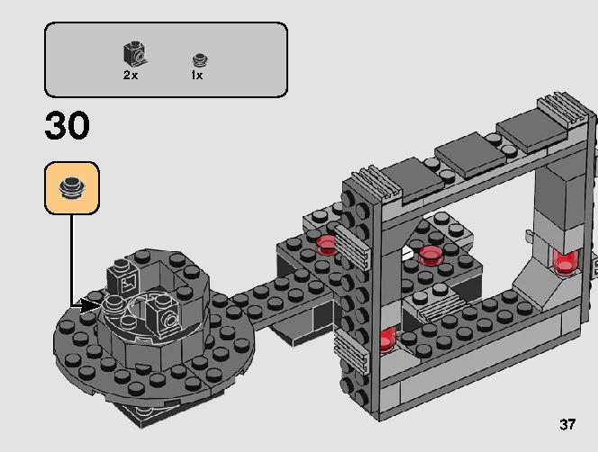

3D LEGO Manual:
AR & C4D
#3D, #Renders, #SchoolProject
Problem Statement:
LEGO manuals require a certain attention to detail in order to be followed correctly. Some of the older manuals are so hard to read, they are akin to those "spot the difference" games.
Some more recent adaptations of the LEGO manual have attemped to single out the location of certian pieces that the user may miss (shown below).

But this is the equivalent of putting baind-aid on a broken bone. It's not the ideal solution. The ideal solution for the instruction manual would be to create one with a closer visual design to the actual build process.
This is how I came up with the idea of a 3D animated version of the LEGO instruction manual.
BONUS: I made it in AR too using the existing LEGO manual as an image tracker.
Process:
My first step was to find a model to work off of. I went to the LEGO store and found a small Star Wars LEGO set to use as a reference.
I used Fusion 360 to model each unique piece in the set to use in the animation.
Then I went over to Cinema 4D to create the animation and texture each piece to be rendered.
C4D Rendered Animation:
On my first iteration I just focused on animating each step in a satisfying manner.
For my second iteration I wanted to implement some elements of a traditional LEGO instruction manual that I had lost in the beginning. Plus I wanted to show off all the details of the pieces I modeled in my animation.
AR Version:
This AR version was made with Snapchat's Lens Studio. But this lead to some problems.
Problems:
In a perfect world this AR version would track each page to their corresponding step. However, Lens Studio has a maximum of 10 image trackers which means I can only have a maximum of 10 steps - mine wouldn’t even load my 5th tracker (probably a file size issue). Therefore, I opted to track front page to a full animations of all steps.
Related Projects:

1989 Batmobile:
Solidworks
#CAD, #Renders, #GraphicDesign, #SchoolProject
I worked on this project in an advanced CAD class at NYU Tandon in collaboration with my fellow student Patrick Dowd. We split up the work based on skill and interest; I worked on the exterior form while Patrick worked on the interior drive train and engine turbine.

Textured Arc Reactor:
Maya & Cinema 4D
#3D, #Renders, #SchoolProject
I had this great 3D model of an Iron Man Arc Reactor that I made in a 3D modeling class while learning Maya. I always wanted to post it but I never felt like it was good enough. Then, I enrolled in a virtual enhancement class which was designed to focus on texturing models rather than making them and I jumped at the chance to design a skin worthy of this model.